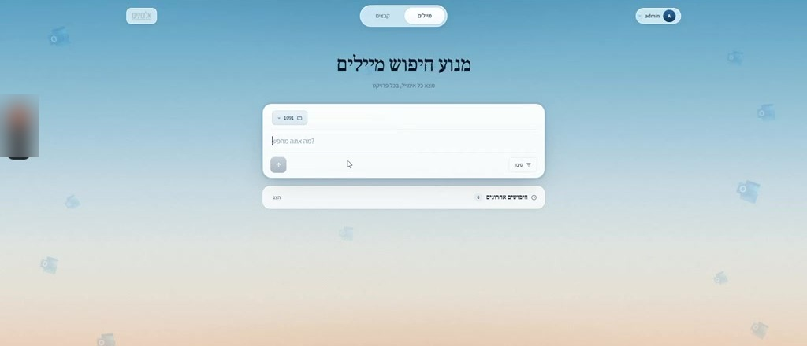

מנוע חיפוש ומיון מיילים
מערכת AI שיושבת על תיבת המייל הארגונית, מסווגת כל הודעה שנכנסת, שומרת אותה בפרויקט הנכון ומאפשרת למצוא כל מייל בחיפוש חופשי.

צילום מסךהארגון מקבל מדי שבוע מאות מיילים מלקוחות, ספקים, שותפים ופניות שירות, והכל נוחת באותה תיבה. הצוות בילה חלק ניכר מהיום רק במיון, היה קשה לדעת מי כבר טיפל במה, ומידע חשוב הלך לאיבוד.
מיפינו את כל סוגי הפניות שמגיעות לתיבה, ובנינו מערכת שמלווה כל הודעה מהרגע שהיא נכנסת ועד שהיא מטופלת ומתועדת, עם מנוע חיפוש שמוצא כל מייל לפי תוכן, פרויקט או שולח.
מה המערכת עושה
סיווג כל מייל חדש
המערכת מזהה כל מייל שנכנס ומסווגת את סוג הפנייה: לקוח, ספק, שירות או בקשת מידע.
כותרת ושיוך לפרויקט
מייצרת כותרת ברורה ושומרת את המידע במקום הנכון, תחת הפרויקט הרלוונטי.
חיפוש בשפה חופשית
מוצאים כל מייל בכל פרויקט בלי לחפור בתיבה, גם בלי לזכור מילים מדויקות.
טיוטות תשובה
מנסחת טיוטת תשובה על בסיס תגובות עבר, שהצוות רק צריך לאשר.
ניתוב לגורם הנכון
מפנה כל פנייה לאחראי ומתעדת את הטיפול, כך שברור מי טיפל ומי לא.
שום מידע לא הולך לאיבוד
כל הודעה מתועדת ונגישה, גם אחרי חודשים.
ארבעה שלבים, בלי עבודה ידנית
קליטה
מייל חדש נכנס לתיבה הארגונית.
סיווג
המערכת מזהה את סוג הפנייה ומייצרת כותרת.
שיוך
המייל נשמר בפרויקט הנכון ומנותב לאחראי.
חיפוש
כל מייל נמצא בשניות דרך מנוע החיפוש.
לפני המערכת
- כל מייל נקרא וממוין ידנית
- לקוחות, ספקים ושירות מתערבבים באותה תיבה
- לא ברור מי כבר טיפל בפנייה
- מידע חשוב הולך לאיבוד
רוצים מערכת כזו לעסק שלכם?
בשיחת אבחון של 20 דקות נבין איפה הולכים אצלכם זמן וכסף, ונראה לכם מה אפשר לבנות.